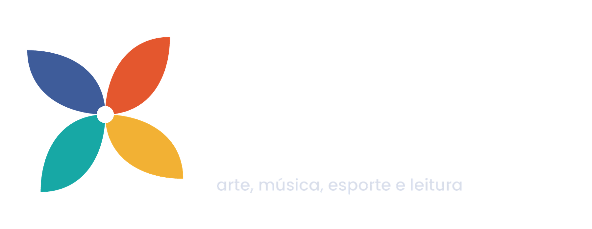
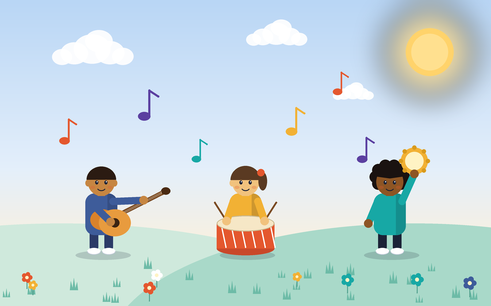
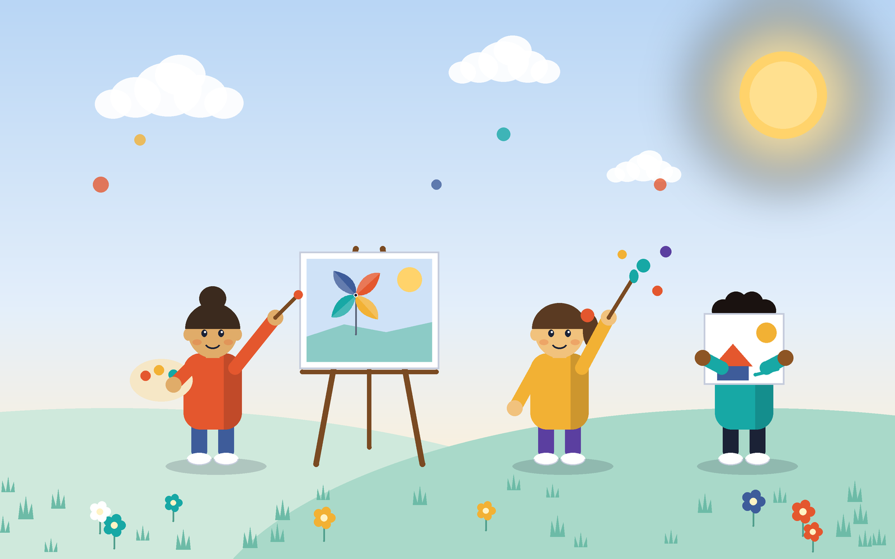
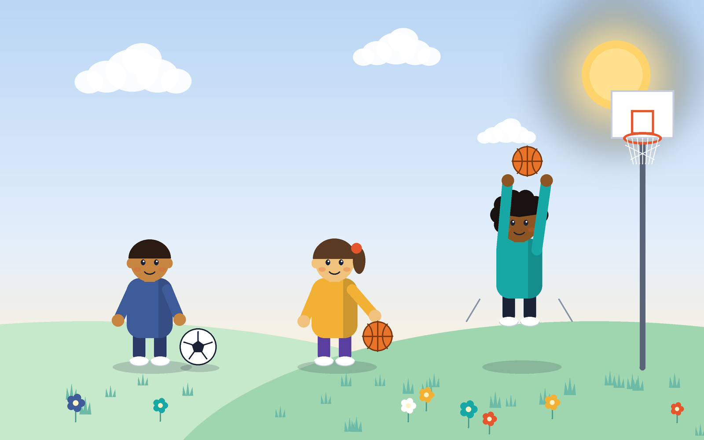
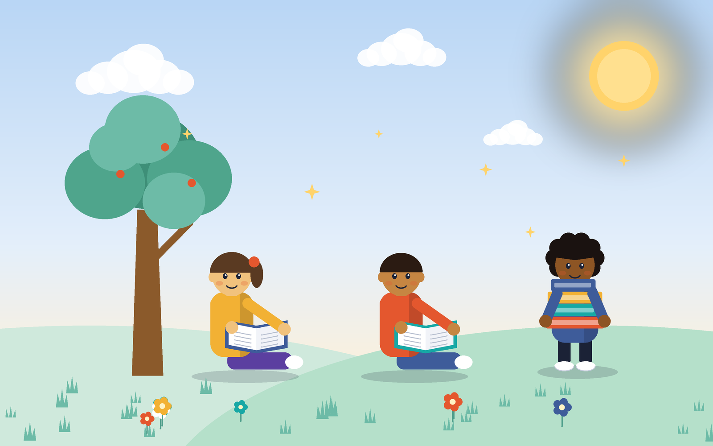

A Quatro Ventos é uma organização sem fins lucrativos que usa a arte, a música, o esporte e a leitura para abrir caminhos para crianças e jovens na Paraíba. Nasceu em 2024, de uma ideia simples: todo jovem merece um lugar para descobrir o que gosta de fazer. Começamos com aula de violão, roda de leitura ou time de futebol, o que foi o seu começo e hoje atendemos mais de 400 crianças e jovens. A música é o coração do nosso trabalho. É por ela que muita gente chega até nós, e é com ela que aprendemos a ouvir o outro, a esperar a nossa vez e a tocar junto. Ao redor dela, o esporte ensina a trabalhar em equipe, a arte dá espaço para criar e os livros ampliam o mundo de cada um.

Aulas de violão, percussão e canto para crianças e jovens, sem custo. Aqui todo mundo aprende a ouvir o outro e a tocar junto.

Oficinas de pintura, desenho e criação com materiais variados. Um espaço livre para experimentar, errar e descobrir o próprio jeito de se expressar.

Treinos de futebol, basquete e jogos coletivos. Além de movimentar o corpo, ensinam a trabalhar em equipe e a respeitar as regras e os colegas

Encontros de leitura em voz alta, empréstimo de livros e conversas sobre o que cada um leu. Um jeito de aproximar crianças e jovens dos livros e ampliar o mundo de cada um.
Para doar, basta clicar no botão abaixo e você será redirecionado a página de doações.
Email: QuatroVentos@gmail.com
Endereço: Rua Projetada, 13 - Sousa/PB